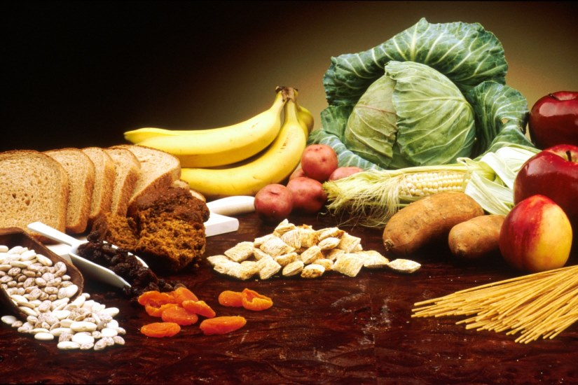
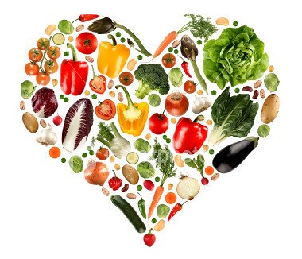
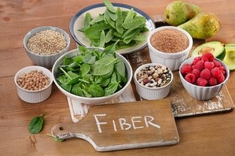

POSA HAKKINDA BİLMENİZ GEREKENLER
Posa, bitkisel yiyeceklerin yapısında bulunan lifsi bileşiklerdir. Diyetteki başlıca kaynakları kuru baklagiller, sebzeler, meyveler ve tam tahıllardır. Sindirilebilen veya sindirilemeyen posa şeklinde sınıflandırılmakta ve çokça faydası bulunmaktadır. Bunlardan en önemlileri obeziteyi ve kalp damar hastalıklarını önlemesi ile bağışıklık üzerine olan olumlu etkileridir.
Posa alımı obeziteyi önlüyor!
Obezite enerji alımı ve harcaması arasındaki dengesizlikten kaynaklanmaktadır. Bunu önlemek demek obeziteyi önlemek demektir. Bu noktada posa, tokluk sağlayacağından; yiyecek, dolayısıyla enerji alımını azaltacaktır. Aynı zamanda yutma, sindirim ve emilim sürelerini de uzatacağından yine tokluk sağlayacak, tüm bu sebeplerle obeziteyi önleyebilecektir.
Diyabetle savaşan posa
Diyabet konusunda kuşkusuz en önemli kavramlardan biri glisemik indekstir. Glisemik indeks karbonhidrat içeren bir besinin kan şekerinize nasıl etki ettiğinin bir göstergesidir. Posa bu noktada bağırsak geçişini yavaşlatarak glisemik indeksi düşürmekte ve kan şekerinde denge sağlamaktadır. Aynı zamanda yeterli posa alımı, düşük yağ alımı ile de ilişkilendirildiğinden yine kilo kaybına, bu da dolaylı olarak diyabetin önlenmesine sebep olmaktadır.
Posa kalbinizin dostu
Dünya Sağlık Örgütünün verilerine göre kardiyovasküler hastalıkların küresel ölüm nedenlerinin başında yer aldığı bildirilmektedir. Halbuki bu hastalık riskini azaltmada posanın rolü yadsınamaz büyüklüktedir. Posa alımı kan kolesterol düzeyinin düşürülmesine sebep olmakta bu da direkt olarak kalp ve damar hastalıklarını etkilemektedir. Yeterli posa alımı ve sağlıklı bir beslenme programı ile kalp ve damar hastalıklarından korunmak aslında mümkün!
Posa ile bağırsaklarınıza hareket katın
Vücudumuzda bizimle beraber yaşayan binlerce bakteri bulunmaktadır Bunlardan kimi zararlı olmakla birlikte çoğunluğu yararlıların oluşturması, sağlık açısından önem arz etmektedir. Floranın oluşmasında veya bozulmasında beslenmenin rolü kuşkusuz çok büyüktür. Bağırsak florasındaki bakteri çeşitliliğinin %12’si genetik faktörlerden kaynaklanmakla birlikte %57 ‘si direkt olarak beslenme ile ilgilidir. Floradaki bakteriler sayesinde vitamin sentezi, bağışıklık sistemi gibi birçok hayati olay gerçekleşir ve yararlı bakterilerin besini olan posa bu hayati olaylar için de oldukça önemlidir. Aynı zamanda posa; bağırsak hareketlerini uyardığı, dışkılama için hacim oluşturduğu ve emilim süresini uzattığı için kabızlık sorunu yaşayanların gözden geçirmesi gereken önemli bir konudur.
Ne kadar posa almalıyım?
Türkiye’ye özgü beslenme rehberi günlük en az 25 g posa alınması ve bunun da kepekli tahıllar, nişastalı olmayan sebzeler, meyve ve kuru baklagillerden sağlanması gerektiğini öneriyor. Bunun da günde 5 porsiyon sebze-meyve, tam tahıl ve kepekli tahıllardan (örneğin kahverengi pirinç, buğday, yulaf, arpa ve çavdar) karşılanması gerektiğini bildiriyor.
Kaynakça
- Türkiye Beslenme Rehberi, 2022.
- Savıcı M, Karaca S, (2019), Yetişkin Bireylerde Farklı Miktarda Çözünür-Çözünmez Posa Tüketiminin Kolonik Geçiş Hızı Üzerine Etkisi, Medical Records, Cilt 1, Sayı 1, 2019, 5 - 14
- Uçar E, Erzurum Alim N, Kardiyovasküler Hastalıklarda Diyet Posasının Rolü, Türkiye Sağlık Bilimleri ve Araştırmaları Dergisi, Cilt 3, Sayı 1, 2020, 1 – 10
- Karlı K, Diyet Posasının Hastalıklar ile Olan İlişkisi, Sağlık Bilimleri ve Yaşam Dergisi, Cilt 2, Sayı 2, 2017, 6 – 17
- Farklı Diyet Modellerinin Bağırsak Mikrobiyotası Üzerine Etkisi The Effect of Different Diet Models on Gut Microbiota Feride Ayyıldız, Hilal Yıldıran. Bes Diy Derg 2019
- Zhang C, Zhang M, Wang S, Han R, Cao Y, Hua W, et al. Interactions between gut microbiota, host genetics and diet relevant to development of metabolic syndromes in mice.